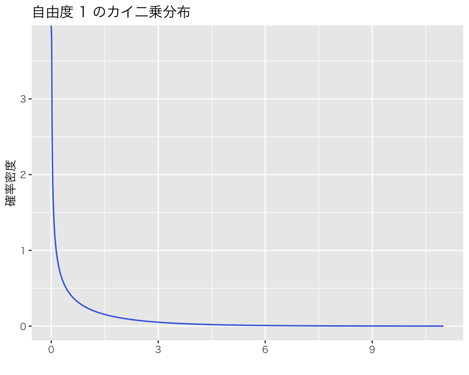
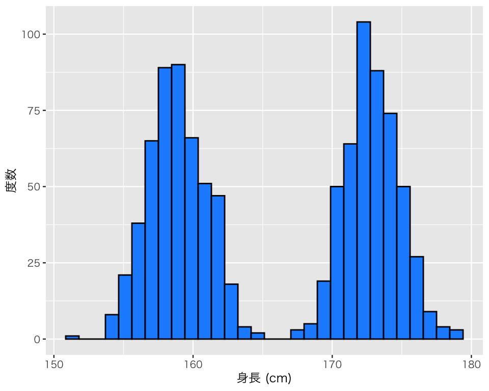

12 2つの変数の関係を理解する
今回の目標
- 2つの変数の関係を調べる方法を理解しよう！
- 質的変数同士の関係の検証法
- 量的変数同士の関係の検証法
12.1 準備
今回利用するパッケージを読み込む。
JDCat分析ツールを使わない場合は、日本語が正しく表示されるように以下のコードを実行する。
## 図のなかで日本語を使えるようにする
## フォントの設定はお好みで
## （Unix/Linux ではIPAexフォントのインストールが必要かも）
if (.Platform$OS.type == "windows") {
if (require(fontregisterer)) {
my_font <- "Yu Gothic"
} else {
my_font <- "Japan1"
}
} else if (capabilities("aqua")) {
my_font <- "HiraginoSans-W3"
} else {
my_font <- "IPAexGothic"
}
theme_set(theme_gray(base_size = 9,
base_family = my_font))12.2 データの入手
プロジェクト内に data ディレクトリがない場合は、まずディレクトリを作る。
dir.create("data")次に、今回の実習で利用するデータ (fake_bivariate.csv) をダウンロードし、プロジェクト内の data フォルダの中に保存する（このデータは架空のものである）。
このデータセットを read_csv() で読み込み、 myd という名前で利用する。
myd <- read_csv("data/fake_bivariate.csv")Rows: 1000 Columns: 5
── Column specification ────────────────────────────────────────────────────────
Delimiter: ","
dbl (5): id, female, support, height, faheight
ℹ Use `spec()` to retrieve the full column specification for this data.
ℹ Specify the column types or set `show_col_types = FALSE` to quiet this message.データセットに含まれる変数を確認しよう。
names(myd)[1] "id" "female" "support" "height" "faheight"このデータセットに含まれているのは、以下の変数である。
-
id: 個人のID（識別番号） -
female: 女性であることを表すダミー変数（男性なら0、女性なら1） -
support: 内閣を支持することを表すダミー変数（不支持なら0、支持なら1） -
heihgt: 身長 (cm) -
faheigt: 父親の身長 (cm)
データの中身を確認してみよう。
glimpse(myd)Rows: 1,000
Columns: 5
$ id <dbl> 1, 2, 3, 4, 5, 6, 7, 8, 9, 10, 11, 12, 13, 14, 15, 16, 17, 18…
$ female <dbl> 0, 0, 0, 0, 0, 1, 1, 1, 1, 0, 0, 1, 1, 1, 1, 1, 1, 0, 1, 0, 1…
$ support <dbl> 1, 1, 0, 1, 1, 0, 1, 0, 1, 1, 1, 1, 1, 0, 1, 0, 1, 1, 0, 1, 0…
$ height <dbl> 174.5, 171.3, 174.2, 173.5, 169.7, 157.0, 158.5, 161.5, 164.1…
$ faheight <dbl> 179.0, 166.4, 169.7, 171.5, 156.5, 163.1, 170.5, 173.8, 180.7…13 質的変数同士の関係を調べる
13.1 質的変数
myd（読み込んだデータセット） には、女性を表す female 変数と、内閣に対する支持を表す support 変数がある。これらの変数では、数字自体には特に意味がない。このような変数は、質的変数 (qualitative variables) と呼ばれる。また、female のように、ある特性を備えているかどうかを0 と 1 で表現する変数をダミー変数 (dummy variable) と呼ぶ。female の場合、変数名が female（女性）なので、女性という特性をもっているかどうかを表している。その特性をもっていれば（つまり、女性は）1、もっていなければ（つまり男性は）0で表される。
データセットのうち、何人が女性で何人が男性かを調べるために、表を作ってみよう。表は table() で作れる。
table(myd$female)
0 1
500 500 男性 (0) が500人、女性 (1) が500人いることがわかる。
このままでも分析はできるが、0と1だと何を表しているのかわかりにくい。そこで、0と1にラベル付けをしよう。質的変数は、factor という型に変形して、ラベルをつけると使いやすい。そのために factor() を使う。
ここで、|> はパイプ演算子と呼ばれるのもので、|> の左側で評価した内容を、|> の右側にある関数の第1引数として使う。単純な例として、sqrt(4) は 4 |> sqrt() と書くことができる。試してみよう。
実際には、このように単純な計算でパイプを使う必要はないが、プログラムが複雑になると、パイプを使ったほうが楽なことが多くなる。
パイプ演算子を入力するためのショートカットは、
-
Cmd+Shift+M(macOS) -
Control+Shift+M(macOS and Windows) である。
もう一度、先ほどと同じように表を作ってみよう。
table(myd$female)
男性 女性
500 500 男性と女性というラベルが付いたことがわかる。
女性の人数を直接数えるには、次のようにすればよい。
sum(myd$female == "女性")[1] 500一度ラベルをつけてしまうと、元の値は使えなくなるので注意が必要である。たとえば、女性ダミーで値が1の個数を数えると、
sum(myd$female == 1)[1] 0となってしまう。
もう一つの質的変数である内閣への支持も表にしてみよう。
table(myd$support)
0 1
450 550 450人が内閣を不支持、550人が支持していることがわかる。やはり、0と1ではわかりにくいので、ラベルをつけよう。
もう一度、先ほどと同じように表を作ってみよう。
table(myd$support)
不支持 支持
450 550 ラベルをつけることができた。
13.2 クロス表
上で見た2つの質的変数同士には、何か関係があるのだろうか。これを確かめるために、2つの質的変数の関係を表にしてみよう。複数の変数を使った表をクロス表 (corss table, contingency table)と呼ぶ。クロス表も table() で作れる。
table(myd$female, myd$support) # 行の変数を先に、列の変数を後に書く
不支持 支持
男性 200 300
女性 250 250myd$ をすべての変数につけるのが面倒なときは、with() を使って次のように書くこともできる。
変数名も表示されるので、こちらのほうが便利だろう。
この表に名前をつけて保存し、後で使えるようにしよう。
男性で内閣不支持が200人、男性で支持するのが300人、女性では不支持も支持も250人ずついることがわかる。
この表には、行 (row) や列 (column) ごとの合計値が示されていない。合計値は、あったほうが便利だが、表の中身がわかっていれば計算することができるので、必要不可欠な情報ではない。つまり、合計値は、データにとっては周辺的な情報であるし、物理的に見ても表の周辺に記載されることになるので、周辺度数 (margins) と呼ばれる。表を読む際には周辺度数があったほうがわかりやすいので、addmargins() で周辺度数を加えよう。
addmargins(tbl_fem_sup) support
female 不支持 支持 Sum
男性 200 300 500
女性 250 250 500
Sum 450 550 1000表の周辺に合計 (Sum) が加えられた。
列の周辺度数のみを加えたいときは、margin = 1 を指定する。
addmargins(tbl_fem_sup, margin = 1) support
female 不支持 支持
男性 200 300
女性 250 250
Sum 450 550行の周辺度数のみを加えたいときは、margin = 2 を指定する。
addmargins(tbl_fem_sup, margin = 2) support
female 不支持 支持 Sum
男性 200 300 500
女性 250 250 500この表から、男性の方が内閣支持の割合が大きいことがわかる。
割合 (proportion) そのものを表示したいときは、作ったテーブルに対して prop.table () を使う。 prop.table() を使うときに注意すべき点が2つある。 まず、何を100パーセントにするのか決める必要がある。 私たちのデータの場合、(1) 男性は男性だけで100パーセント、女性は女性だけで100パーセントにする、(2) 内閣支持者と内閣不支持者をそれぞれ100パーセントにする、(3) 全体（1,000人）を100パーセントにするという3通りが考えられる。私たちの表では、性別が行に、内閣の支持が列に表示されているので、(1) の場合を行パーセント、(2) を列パーセント、 (3) を全体パーセント と呼ぶ。
ここでは、「性別によって内閣支持に違いがあるか」を調べたいとしよう。行にある変数である性別ごとの違いを知りたいので、行パーセントを指定する。行パーセント計算するときは、margin = 1 を指定する（列パーセントは margin = 2、全体パーセントは margin を指定しない）。addmargin() と margin 指定の方法が異なるので、注意が必要である。
第2に、周辺度数を加える場合は、行と列のうち、原因として注目していないほうの周辺度数は、prop.table() を使う前に、注目している方の周辺度数は prop.table() より後に加えた方がよい。私たちは性別（行変数）による違いに注目しているので、
- 列（内閣支持）の周辺度数を加える
- 割合を計算する
- 行（性別）の周辺度数を加える
という順番で表を作った方がよい。そのためには、次のようにすればよい。
(tbl_fem_sup_m1 <- addmargins(tbl_fem_sup, margin = 1)) # 列周辺度数を加える support
female 不支持 支持
男性 200 300
女性 250 250
Sum 450 550(tbl_fem_sup_p <- prop.table(tbl_fem_sup_m1, margin = 1)) # 行パーセントで割合に変換する support
female 不支持 支持
男性 0.40 0.60
女性 0.50 0.50
Sum 0.45 0.55(tbl_fem_sup_2 <- addmargins(tbl_fem_sup_p, margin = 2)) # 行周辺度数を加える support
female 不支持 支持 Sum
男性 0.40 0.60 1.00
女性 0.50 0.50 1.00
Sum 0.45 0.55 1.00パーセント表示にしたいときは、100をかければよい。
(tbl_fem_sup_3 <- tbl_fem_sup_2 * 100) support
female 不支持 支持 Sum
男性 40 60 100
女性 50 50 100
Sum 45 55 100男性の内閣支持率は60%、女性の内閣支持率は50%であることがわかる。
13.3 独立性の検定
私たちの標本（データ）では、女性の内閣支持率より、男性の内閣支持率の方が高い。これはたまたま得られた結果だろうか。それとも、母集団でも男性の内閣支持率の方が高いと考えられるだろうか。
これを確かめるために、統計的検定を行う。ここで検証する仮説は、以下のものである。
- 帰無仮説：性別と内閣支持率は独立である（つまり、男性の内閣支持率と女性の内閣支持率に差はない）
- 対立仮説：性別と内閣支持率には関連がある [独立ではない] （つまり、男性の内閣支持率 \(\neq\) 女性の内閣支持率）
この検定は、2つの変数が独立である（帰無仮説）か、独立でない（対立仮説）かを確かめるので、独立性の検定 と呼ばれる。また、検定に \(\chi^2\) （カイ二乗）分布を使うので、\(\chi^2\) 検定 と呼ばれることもある（英語では、\(\chi^2\) [chi-square] test of independence と呼ばれる）。
検定で使うカイ二乗分布の自由度は、分析する表の \((行数 - 1) \times (列数 - 1)\) である。周辺度数を除くと、私たちの表は2行（男性または女性）\(\times\) 2列（不支持または支持）なので、自由度 \((2-1)(2-1) = 1\) のカイ二乗分布を利用する。
有意水準を7% に設定すると、検定に使う臨界値は、qchisq() を使って、
qchisq(p = 0.07, df = 1, lower.tail = FALSE)[1] 3.28302ということがわかる。検定統計量がこの臨界値より大きいとき、私たちは帰無仮説を棄却する。 反対に、検定統計量がこの臨界値以下のとき、私たちは帰無仮説を棄却しない。
検定統計量は、chisq.test() で計算できる（\(\ast\) イェーツの連続性補正は行わないので correct = FALSE とする）。
chisq.test(myd$female, myd$support, correct = FALSE)
Pearson's Chi-squared test
data: myd$female and myd$support
X-squared = 10.101, df = 1, p-value = 0.001482X-squared が検定統計量である。ここでは、10.101 という値が得られた。この値は、有意水準7%での臨界値である3.28302 より大きいので、帰無仮説は棄却される。
したがって、内閣支持率は性別よって異なり、男性の方が女性よりも内閣を支持するという判断を下す。
13.4 カイ二乗分布を理解する
カイ二乗 (\(\chi^2\)) 分布は、自由度 \(df \geq 1\) によってその形を変える。
たとえば、自由度1, 3, 5, 10のカイ二乗分布は、以下のように分布する。
x <- seq(0, 20, length = 1000)
chi1 <- dchisq(x, df = 1)
chi3 <- dchisq(x, df = 3)
chi5 <- dchisq(x, df = 5)
chi10 <- dchisq(x, df = 10)
df_chisq <- tibble(
x = rep(x, 4),
chisq = c(chi1, chi3, chi5, chi10),
group = rep(c("df = 1", "df = 3", "df = 5", "df = 10"), rep(1000, 4)))
dens_chisq <- ggplot(df_chisq, aes(x = x, y = chisq,
color = group, linetype = group)) +
geom_line() +
xlim(0, 15) + ylim(0, .5) +
labs(x = "", y = "確率密度") +
scale_color_discrete(name = "自由度 (df)") +
scale_linetype_discrete(name = "自由度 (df)")
plot(dens_chisq)カイ二乗分布の形状を確認するための関数を用意したので、これを使って色々なカイ二乗分布の形状を確認してみよう（この関数の中身を理解する必要はない）。
自由度1のカイ二乗分布は、
plot_chisq(df = 1)
自由度3のカイ二乗分布は、
plot_chisq(df = 3)実習課題：自由度 (df) の値をによって、カイ二乗分布がどのように変化するか確かめてみよう。
14 量的変数同士の関係を調べる
14.1 量的変数
私たちのデータセットには、height（身長）と faheight（父親の身長） という2つの量的変数（quantitative variables）がある。量的変数とは、簡単にいうと、数値自体に意味がある変数である。
量的変数を調べるときは、ます、基本的な統計量とヒストグラムを確認する。 まず、height の統計量を確認する。
mean(myd$height)[1] 165.8727median(myd$height)[1] 166.15var(myd$height)[1] 53.41806sd(myd$height)[1] 7.308766ヒストグラムを作る。
h_height <- ggplot(myd, aes(x = height)) +
geom_histogram(color = "black", fill = "dodgerblue") +
labs(x = "身長 (cm)", y = "度数")
plot(h_height)`stat_bin()` using `bins = 30`. Pick better value with `binwidth`.
ヒストグラムに山が2つある。なぜだろうか？
このデータが身長のデータであり、男女共データに含まれていることを考えると、性別によって分布の山が変わりそうである。男女別にヒストグラムを作ってみよう。
h_height_gender <- h_height +
facet_grid(row = vars(female))
plot(h_height_gender)`stat_bin()` using `bins = 30`. Pick better value with `binwidth`.やはり、性別によって分布が異なることがわかる。このようなことがわかるので、データ分析の前に必ずヒストグラムを確認する習慣をつけてほしい。
同様に、faheight の統計量を確認する。
mean(myd$faheight)[1] 169.7533median(myd$faheight)[1] 169.6var(myd$faheight)[1] 31.34405sd(myd$faheight)[1] 5.598576ヒストグラムを作る。
h_father <- ggplot(myd, aes(x = faheight)) +
geom_histogram(color = "black", fill = "tomato") +
labs(x = "身長 (cm)", y = "度数")
plot(h_father)`stat_bin()` using `bins = 30`. Pick better value with `binwidth`.
父親の身長は、（当たり前だが）子の性別によって変わることはないので、分布の山は1つである。
14.2 質的変数と量的変数の関係
身長のヒストグラムから明らかになったように、性別（質的変数）と身長（量的変数）の間に関係がありそうである。 質的変数と量的変数の関係は、図示すると理解しやすい。箱ひげ図 (box-and-whisker plot または単に box plot) とバイオリン図 (violin plot) と呼ばれる図を作って確認してみよう。
vb1 <- ggplot(myd, aes(x = female, y = height)) +
geom_violin() +
geom_boxplot(fill = "gray", width = 0.5) +
labs(x = "性別", y = "身長 (cm)")
plot(vb1)
この図は、箱がデータの中心50%分を表している。箱の中にある太い線は、中央値（50パーセンタイル、第2四分位）である。箱の下端が第1四分位（25パーセンタイル）、箱の上端が第3四分位（75パーセンタイル）を示している。また、箱から上下に伸びている線がひげである。ひげの下端が最小値（外れ値を除く）であり、上端が最大値（外れ値を除く）である。ひげよりも外側にある点は外れ値（outlier）である。
第3四分位数（箱の上端）より、1.5\(\times\)IQR以上大きい値、または第1四分位数（箱の下端）より、1.5\(\times\)IQR 以上小さい値が外れ値と見なされる。ただし、IQR（interquartile range, 四分位範囲）とは、第3四分位と第1四分位の差（図で考えると、箱の高さ）である。）
この図を見ると、男性の身長の分布と女性の身長の分布は異なる分布であり、男性の身長のほうが高いようである。
しかし、これはあくまで標本の分布であり、母集団でも同じことが言えるかどうかは検定で確かめる必要がある。 これを確かめるためには、平均値の差の検定（この場合は ウェルチ (Welch) の \(t\) 検定）を行う必要がある。
14.3 量的変数同士の関係
次に量的変数同士（height とfaheight）の関係を確かめてみよう。
まず、2つの関係を図示する。2つの量的変数同士の関係は、散布図 (scatter plot) を使って図示する。geom_point() で散布図が描ける。
scat1 <- ggplot(myd, aes(x = faheight, y = height)) +
geom_point() +
labs(x = "父親の身長 (cm)", y = "本人の身長 (cm)")
plot(scat1)この図を見ると、父親の身長が高いほど、子の身長が高いという関係がありそうだ。ヒストグラムで確認したように、データには男女が含まれているが、性別によって身長の分布が異なり、点が2つのグループに分かれていることがわかる。
次に、2変数の直線的な関係の強さを測るために、相関係数 (correlation coefficient) を計算してみよう。cor() を使う。
相関係数は約0.24であり、弱い正の相関があるようである。
図から得られた情報と相関係数から得られた情報は整合的だろうか。 相関係数だけ見ると、父親の身長と子の身長にはあまり強い関係はなさそうだという結論になる。 しかし、散布図を見ると、2変数の間には非常に強い関係がありそうである。
図からわかる通り、散布図の点は2つのグループに分かれている。男女を色と形で区別して散布図を作り直してみよう。
scat2 <- ggplot(myd, aes(x = faheight, y = height,
color = female, shape = female)) +
geom_point() +
labs(x = "父親の身長 (cm)", y = "本人の身長 (cm)") +
scale_color_brewer(palette = "Set1", name = "性別", labels = c("男性", "女性")) +
scale_shape_discrete(name = "性別", labels = c("男性", "女性"))
plot(scat2)この図からわかる通り、性別ごとにグループができている。
男女別にして相関係数を求め直そう。 まず、女性の場合について求める。filter() を使うと、女性だけ簡単に抜き出せる。
このコマンドは、パイプを使わないと次のように書ける。
パイプを使ったほうがコードが読みやすい。
この結果から、女性については父親の身長と本人の身長の間に強い正の相関があることがわかる。
男性はどうだろうか。
やはり強い正の相関がある。
この例からわかる通り、単に相関係数だけを求めると、2変数の関係を見誤る可能性がある。反対に、散布図だけに頼ると、ありもしないパタンを「見つけて」しまうことがある（偶然できた壁のシミが顔に見えることがあるように、人間は意味のないパタンを認識し易い）。 したがって、2つ（以上）の量的変数の関係について調べるときは、散布図と相関係数をセットで使うことが重要である。